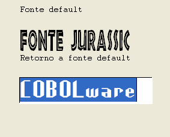

Declaração de especificação de fonte.
FontDefinition REFERENCE;referência
[
NAME nome
BOLD FIXED
ITALIC STRIKE-OUT
UNDERLINE WIDTH
largura HEIGHT
altura ]
referência
Código de referência
retornado pelo comando para ser utilizado nas telas (4 bytes
numéricos), o processador de telas reconhece esse tipo de
atributo pelo radical “CWFONT”, todos os itens de tela
serão exibidos tendo como base a definição eté
que seja exibido um outro atributo sendo que o valor zero retorna
para o default.
nome
Nome de fonte instalada no
Windows, exemplos: "Arial", "Currier New" e
"Impact".
BOLD
Seleciona
negrito, Exemplo.
FIXED
Seleciona
formato fixo, Exemplo.
ITALIC
Seleciona
Itálico, Exemplo.
UNDERLINE
Seleciona
Sublinhado, Exemplo.
STRIKE-OUT
Seleciona
riscado, Exemplo.
largura
Largura
do caractere em pixels.
altura
Altura do caractere em
pixels
IDENTIFICATION DIVISION.
PROGRAM-ID. TSFONT.
AUTHOR. COBOLware Services Ltda.
DATE-WRITTEN. 99/99/9999.
SECURITY. *************************************************
* Exemplo de variação de fontes *
*************************************************
DATA DIVISION.
WORKING-STORAGE SECTION.
01 AREAS-DE-TRABALHO.
05 CWFONT-Jurassic PIC 9(004) VALUE 0.
05 CWFONT-Highlander PIC 9(004) VALUE 0.
05 CWFONT-Default PIC 9(004) VALUE 0.
05 TESTE PIC X(010) VALUE 'COBOLware'.
SCREEN SECTION.
01 TELA-EXEMPLO.
05 LINE 02 COLUMN 05 VALUE "Fonte default".
05 PIC 9(4) FROM CWFONT-Jurassic.
05 LINE 04 COLUMN 05 VALUE "Fonte Jurassic".
05 PIC 9(4) FROM CWFONT-Default.
05 LINE 06 COLUMN 05 VALUE "Retorno a fonte default".
05 PIC 9(4) FROM CWFONT-Highlander.
05 LINE 08 COLUMN 05 PIC X(10) USING TESTE.
05 PIC 9(4) FROM CWFONT-Default.
PROCEDURE DIVISION.
INICIO.
EXEC COBOLware FontDefinition REFERENCE;CWFONT-Jurassic
NAME "Jurassic” HEIGHT 40 WIDTH 15
END-EXEC
EXEC COBOLware FontDefinition REFERENCE;CWFONT-Highlander
NAME "Highlander" WIDTH 20 HEIGHT 40
END-EXEC
DISPLAY TELA-EXEMPLO
ACCEPT TELA-EXEMPLO.
FIM. GOBACK.
END PROGRAM TSFONT.
|
|
 |